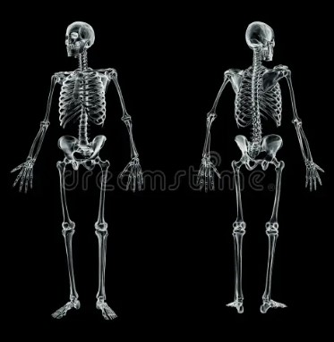

Ever wonder what gives you shape and allows you to move? That's your skeletal system! It's more than just a collection of rigid bones; it's your body's dynamic internal structure, constantly working behind the scenes.
What Does Your Skeleton Do?
Your skeletal system, typically made of 206 bones in adults, performs several vital roles:

- Support: It's your body's framework, holding everything up and providing anchors for your muscles.
- Protection: Bones act as shields for your vital organs. Think of your skull protecting your brain or your ribs safeguarding your heart and lungs.
- Movement: While bones don't move themselves, they act as levers. Muscles pull on them, allowing you to walk, run, and everything in between.
- Mineral Storage: Bones store essential minerals like calcium and phosphorus, which are crucial for many bodily functions.
- Blood Cell Production: Inside many bones, bone marrow produces all your blood cells (red, white, and platelets).
Your Skeleton's Two Main Parts
Your skeleton is divided into two key sections:
- Axial Skeleton: This is your body's central core – your skull, spine, and rib cage. It protects your brain, spinal cord, and vital chest organs.
- Appendicular Skeleton: These are the bones of your limbs (arms and legs) and the girdles that attach them to your core. This part is all about movement!
Types of Bones
Bones come in various shapes and sizes, each adapted for specific functions. They are typically classified into five main types:
Long Bones
These bones are longer than they are wide, with a shaft and two distinct ends. They primarily function as levers, supporting weight and facilitating movement.
- Examples: Femur (thigh bone), humerus (upper arm bone), tibia (shin bone), phalanges (finger and toe bones).
Short Bones
Roughly cube-shaped, short bones have similar lengths and widths. They provide stability and some limited movement.
- Examples: Carpal bones (wrist bones), tarsal bones (ankle bones).
Flat Bones
These bones are thin, flattened, and often slightly curved. Their main role is to provide protection for internal organs and broad surfaces for muscle attachment.
- Examples: Skull bones (e.g., parietal, frontal), sternum (breastbone), ribs, scapulae (shoulder blades).
Irregular Bones
As the name suggests, irregular bones have complex, unique shapes that don't fit into the other categories. They often provide protection and serve as attachment points for muscles.
- Examples: Vertebrae (spinal bones), sacrum, coccyx, many facial bones.
Sesamoid Bones
These are small, round bones embedded within tendons, usually at joints. They act like pulleys, providing a smooth surface for the tendon to slide over, increasing the mechanical advantage of the muscle.
- Example: Patella (kneecap).
Types of Joints
Joints, also known as articulations, are where two or more bones meet. They allow for movement and provide mechanical support. Joints are typically classified by the type of tissue that connects the bones or by the degree of movement they allow:
Fibrous Joints (Immovable)
These joints are connected by dense connective tissue, allowing for little to no movement.
- Example: The sutures between the bones of your skull.
Cartilaginous Joints (Slightly Movable)
Bones are joined by cartilage. These joints allow for limited movement.
- Example: The joints between your vertebrae (spinal bones) or the pubic symphysis.
Synovial Joints (Freely Movable)
These are the most common and complex type of joint, characterized by a fluid-filled cavity (synovial fluid) that allows for a wide range of motion. Most of the joints you think of for movement are synovial.
Types of Synovial Joints:
- Hinge Joint: Allows movement in one plane, like a door hinge.
- Examples: Elbow, knee, finger (interphalangeal) joints.
- Ball and Socket Joint: Allows movement in all planes, including rotation.
- Pivot Joint: Allows rotational movement around a single axis.
- Examples: Joint between the first two cervical vertebrae (atlas and axis) allowing head rotation, and the joint between the radius and ulna allowing forearm rotation.
- Condyloid Joint (Ellipsoidal): Allows movement in two planes (flexion/extension, abduction/adduction), but no rotation.
- Examples: Wrist (radiocarpal) joint, knuckles (metacarpophalangeal joints).
- Saddle Joint: Shaped like a saddle, allowing movement in two planes with limited rotation.
- Example: Thumb (carpometacarpal joint of the thumb).
- Plane Joint (Gliding Joint): Allows bones to glide past each other in various directions, with limited movement.
- Examples: Between carpal bones in the wrist, between tarsal bones in the ankle.
Bone Remodeling
Bones aren't just rigid structures; they're living tissue! They're always rebuilding themselves through a process called bone remodeling. This involves two key cell types:
- Osteoclasts: These cells break down old bone tissue, releasing calcium into the bloodstream.
- Osteoblasts: These cells build new bone tissue, using calcium from the blood to strengthen and reshape bones.
This continuous teamwork by osteoclasts and osteoblasts ensures bones maintain their proper shape, repair minor damages, and regulate the crucial calcium concentration (Ca conc) in your blood.
Common Bone Conditions
Sometimes, this delicate balance can be disrupted, leading to bone conditions:
- Osteoporosis: Bones become weak and brittle, often due to excessive bone breakdown or insufficient bone formation. This increases the risk of fractures.
- Rickets (in children) / Osteomalacia (in adults): Bones soften due to a severe lack of Vitamin D, which impairs calcium absorption and bone mineralization.
- Fractures: Simply put, a broken bone. While common, the bone remodeling process helps with healing.
Keep Your Bones Strong
Want a healthy skeleton? Focus on:
- Calcium-rich foods
- Vitamin D for calcium absorption
- Weight-bearing exercise
- Avoiding smoking and excessive alcohol
Written by Kasiban Parthipan